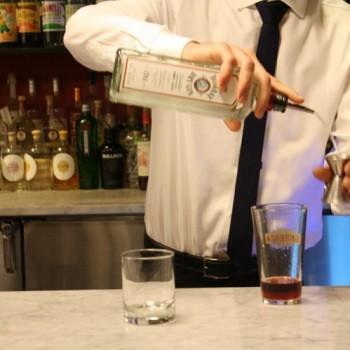
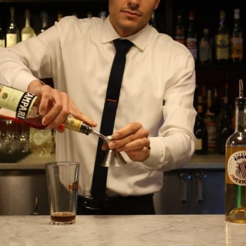
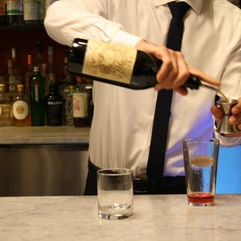
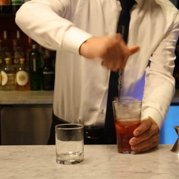
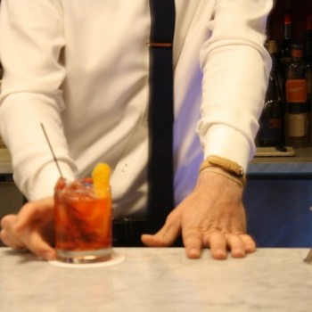

| Gin | Amaro | Vermouth |
|---|---|---|
| Tanqueray | Campari | Cocchi Storico Vermouth di Torino. |
| Big Gin | Aperol | Punt e Mes |
| Botanist | Cynar | Vermut Lustau |
Using a jigger, measure 1 ounce of gin. Pour into mixing glass.
Next, measure 1 ounce of Campari. Pour into mixing glass.
Finally, the last of 3 equal parts, add 1 ounce of Sweet Vermouth to the mixing glass.
Add fresh ice to mixing glass and stir to combine.
Use strainer to pour over fresh ice in old-fashioned glass.
Use zester to express orange over cocktail and rim of cocktail glass. Garnish with zest and serve!
